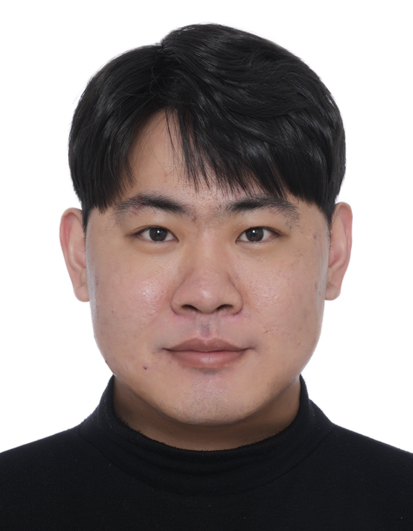

M.S. in Electronic and Communication Engineering
Expected August 2026
Thesis: 얼굴 영상 기반 비접촉 혈압 추정을 위한 생리학적 특징 유도 경량 이중 브랜치 모델

AI Research Engineer
Biomedical Signal Processing · Computer Vision · Deep Learning
M.S. candidate at Kwangwoon University. I develop AI systems that infer physiological signals from facial videos and biosignals, with experience spanning research, industry collaboration, product deployment, publications, patents, and GS certification.
Academic background and thesis.
Expected August 2026
Thesis: 얼굴 영상 기반 비접촉 혈압 추정을 위한 생리학적 특징 유도 경량 이중 브랜치 모델
Industry and applied AI projects completed through the laboratory and external programs.
Developing a multi-agent AI platform that orchestrates Korean foundation models to support pre-clinical mental healthcare workflows, structured clinician handoff reports, longitudinal patient-context retrieval, and medical institution routing.
Developing a multimodal closed-loop AI system that detects hidden alcohol craving by analyzing inconsistencies between physiological responses and spoken language, then delivers just-in-time personalized intervention.
Developed and serviced a kiosk product that estimates multiple physiological signals from facial videos using computer vision and remote photoplethysmography.
Developed a deep learning model for detecting arrhythmias from single-lead ECG signals.
Developed an AI-powered mobile application service that estimates physiological indicators from facial videos.
Participated in the international RePSS challenge on camera-based remote physiological signal sensing and contributed to the official challenge workshop paper.
Built a BERT-based fake news detection model and integrated it into an interactive chatbot service during a government-funded AI training program.
Participated in the AI Grand Challenge by developing a BERT-based dialogue classification system for recognizing violence and non-violence situations from Korean conversations.
International and domestic conference papers.
IEEE/CVF Winter Conference on Applications of Computer Vision (WACV), 2026 · Accepted
International Joint Conference on Neural Networks (IJCNN), 2026
International Technical Conference on Circuits/Systems, Computers and Communications (ITC-CSCC), 2025
대한전자공학회 학술대회, 2024
대한전자공학회 학술대회, 2026
Korean patent applications in contactless physiological measurement.
최영석, 손재혁 · Korean Patent Application No. 10-2026-0006441
최영석, 손재혁 · Korean Patent Application No. 10-2024-0165318
Awards from research presentations and AI development projects.
“노년층 발화 음성 다중모달 그래프 표현학습 기반 감정 인식” · KOSOMBE Spring Conference
BERT-Based Fake News Detection and Chatbot Service · Goorm AI Bootcamp
한국어 대화 기반 폭력 및 비폭력 상황 인식
Core tools and research areas.
Python, PyTorch, CUDA, Git, OpenCV, LaTeX
CNN, Transformer, Mamba, Contrastive Learning, Representation Learning
rPPG, ECG, Physiological Signal Processing, Blood Pressure Estimation